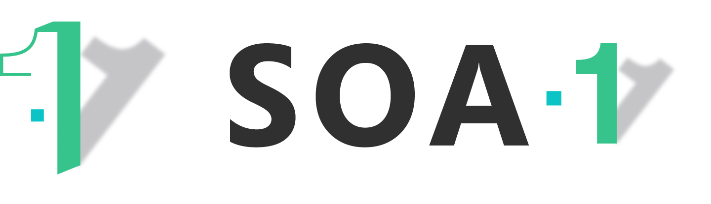

Ir al contenido

Tecnologías de Información Orientadas a tu Servicio
Menú
Inicio
Sobre este tema
GitHub Repo
Síguenos en Twitter
Síguenos en Facebook
Síguenos en Google+
Nube de Etiquetas
markdown
agricultura
publishing
tags
ingles
pelican